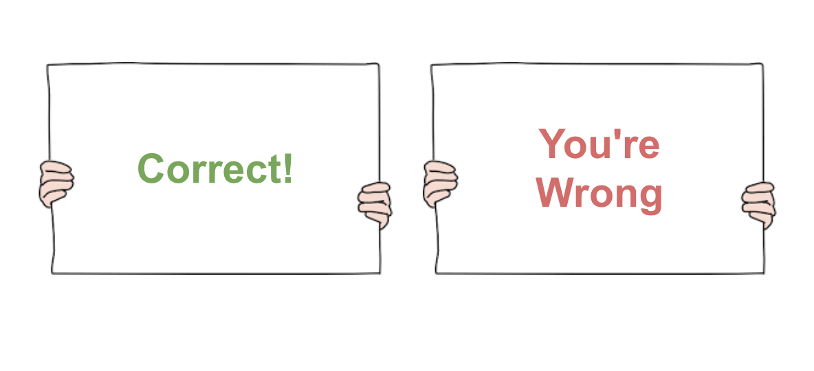
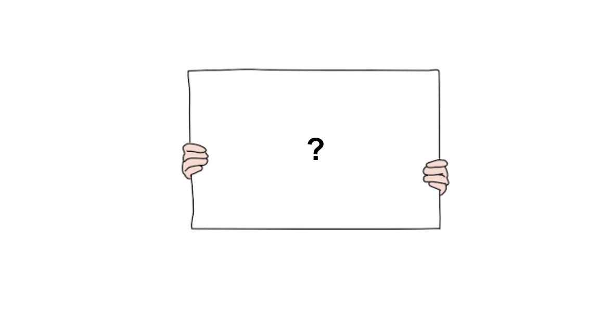
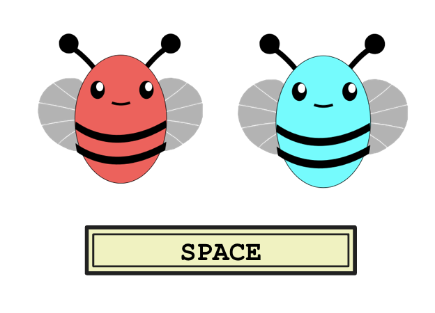
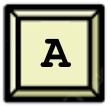
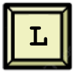

<!DOCTYPE html>
<html>
  <head>
    <title>My experiment</title>
    <script src="jspsych/jspsych.js"></script>
    <script src="jspsych/plugin-html-keyboard-response.js"></script>
    <script src="jspsych/plugin-html-button-response.js"></script>
    <script src="jspsych/plugin-image-keyboard-response.js"></script>
    <script src="jspsych/plugin-preload.js"></script>
    <script src="jspsych/plugin-call-function.js"></script>
    <script src="jspsych/plugin-fullscreen.js"></script>
    <script src="jatos.js"></script>
    <link href="jspsych/jspsych.css" rel="stylesheet" type="text/css" />
    <link href="css/style.css" rel="stylesheet" type="text/css"></link>
  </head>
  <body></body>
  <script>
    
    const jsPsych = initJsPsych({
      use_webaudio: false,
      on_finish: function() {
        if (typeof jatos !== 'undefined') {
          jatos.submitResultData(jsPsych.data.get().json());
          jatos.startNextComponent();
        }
      },
      on_interaction_data_update: function(data) {
        if(data.event == 'fullscreenexit'){
          forceEnd("fullscreenexit");
        }
      },
      show_progress_bar: false
    });

    // type 5 function
    const labelingFunction = {
      '001': 0,
      '101': 0,
      '000': 0,
      '110': 0,
      '011': 1,
      '010': 1,
      '111': 1,
      '100': 1,
    }

    const xorFunction = {
      '001': 0,
      '101': 1,
      '000': 0,
      '110': 0,
      '011': 1,
      '010': 1,
      '111': 0,
      '100': 1,
    }

    const oneDFunction = {
      '001': 0,
      '101': 1,
      '000': 0,
      '110': 1,
      '011': 0,
      '010': 0,
      '111': 1,
      '100': 1,
    }

    const central = {
      '001': 0,
      '101': 0,
      '000': 0,
      '011': 1,
      '010': 1,
      '111': 1,
    }

    const exceptions = {
      '110': 0,
      '100': 1,
    }
    
    const numFeatures = 3;
    const feedbackDuration = 1500;          // ms to show feedback on correct trials
    const incorrectFeedbackDuration = 4000; // ms to show feedback on incorrect trials
    const numTestBlocks = 2
    const numMetalearningBlocks = 30
    const numNoiseTrialsPerMetalearningBlock = 0

    // Variables to be read in from URLparams
    var prolificId
    var studyId

    // Randomize goodbee badbee assignment to keys
    const goodBeesOnLeft = Math.random() < 0.5

    // Randomize the response map
    const randomResponse = Math.floor(Math.random() * 2);
    const responseMap = {
      'a': randomResponse === 0 ? 0 : 1,
      'l': randomResponse === 0 ? 1 : 0,
      ' ': ' ',
      null: null
    };

    // shuffle feature dimension assignment (e.g. index 0 -> wings, index 1 -> pattern) and generate value assignment for each feature (e.g. 0->stripes, 1->dots)
    function generateFeatureAssignment(numFeatures) {
      const featureIndices = [...Array(numFeatures).keys()];
      for (let i = featureIndices.length - 1; i > 0; i--) {
        const j = Math.floor(Math.random() * (i + 1));
        [featureIndices[i], featureIndices[j]] = [featureIndices[j], featureIndices[i]];
      }
      const featureAssignment = Object.fromEntries(featureIndices.map((val, index) => [index, val]));
      const flipFeatureValues = Array.from({ length: numFeatures }, () => Math.random() < 0.5);
      return {featureAssignment, flipFeatureValues};
    }

    function getImagePath(input, metalearningAssignment) {
      if (input == 'catch') {
        return `assets/img/bugs/${metalearningAssignment['color']}_catch.png`;
      }
      const color = metalearningAssignment['color']
      const featureAssignment = metalearningAssignment['randomization']['featureAssignment']
      const flipFeatureValues = metalearningAssignment['randomization']['flipFeatureValues']
      const output =  "assets/img/bugs/" + color + "-" + input
        .split('')
        .map((bit, index) => (flipFeatureValues[featureAssignment[index]] && input[featureAssignment[index]]!='x') ?  1-input[featureAssignment[index]] : input[featureAssignment[index]])
        .join('-') + ".png";
      return output
    }

    const metalearningAssignment = jsPsych.randomization.repeat([
        {color: 'red', randomization: generateFeatureAssignment(numFeatures)},
        {color: 'blue', randomization: generateFeatureAssignment(numFeatures)}
    ], 1)


    // generate 5 stim maps with specified central/peripheral counts
    const centralEntries = Object.entries(central).map(([stim, correct_response]) => ({stim, correct_response, catch: false, task_part: 'learning'}));
    const peripheralEntries = Object.entries(exceptions).map(([stim, correct_response]) => ({stim, correct_response, catch: false, task_part: 'learning'}));
    const catchEntry = [{stim:'catch', correct_response: ' ', catch: true, task_part: 'learning'}]
    const catchCount = 6; // number of catch trials per 48 task trials

    function buildStimMap(centralCount, peripheralCount, catchCount){
      return arr = [
        ...Array(centralCount).fill(centralEntries).flat(),
        ...Array(peripheralCount).fill(peripheralEntries).flat(),
        ...Array(catchCount).fill(catchEntry).flat()
      ]
    }

    // Stim maps for curriculum conditions
    var stimMap = [
      buildStimMap(8, 0, catchCount),   // 1: 8x central
      buildStimMap(7, 3, catchCount),   // 2: 7x central, 3x peripheral
      buildStimMap(6, 6, catchCount),   // 3: 6x central, 6x peripheral
      buildStimMap(5, 9, catchCount),   // 4: 5x central, 9x peripheral
      buildStimMap(4, 12, catchCount),  // 5: 4x central, 12x peripheral
    ];
    const numLearningBlocks = stimMap.length;
    const blockLength = stimMap[0].length;

    // Assign curriculum condition randomly and generate stim map order
    const curriculumCondition = (() => {
      const options = ['simple_to_complex', 'no_curriculum'];
      const choice = options[Math.floor(Math.random() * options.length)];
      return choice;
    })();
    if (curriculumCondition == 'no_curriculum'){
      stimMap = Array.from({length: numLearningBlocks}, () => buildStimMap(6, 6, catchCount));
    }

    // Set up metalearning stimuli: simple 1D rule or XOR
    // Assign metalearning condition randomly
    const metalearningCondition = (() => {
      const options = ['simple_rule', 'xor'];
      const choice = options[Math.floor(Math.random() * options.length)];
      return choice;
    })();

    // Create the base stimuli for metalearning (will be used to generate trials dynamically)
    var baseMetalearningStim = [];
    if (metalearningCondition == 'xor'){
      baseMetalearningStim = Object.entries(xorFunction).map(([stim, correct_response]) => ({stim, correct_response, catch: false, task_part: 'metalearning'}));
    } else {
      baseMetalearningStim = Object.entries(oneDFunction).map(([stim, correct_response]) => ({stim, correct_response, catch: false, task_part: 'metalearning'}));
      // Randomly select entries to flip for noise
      const indices = [...Array(baseMetalearningStim.length).keys()].sort(() => Math.random() - 0.5).slice(0, numNoiseTrialsPerMetalearningBlock);
      indices.forEach(i => {
        baseMetalearningStim[i].correct_response = 1 - baseMetalearningStim[i].correct_response;
      });
    }

    // Variables for tracking metalearning trial progression
    var currentMetalearningStim = null;
    var metalearningTrialCount = 0;
    const numMetalearningTrialsPerBlock = 8; // Number of regular (non-catch) trials per block
    var catchTrialPosition = 0; // Position of catch trial within each block (randomized)
    
    const testMap = Object.entries(labelingFunction).map(([stim, correct_response]) => ({
      stim,
      correct_response,
      catch: false,
      task_part: 'test'
    }));

    // For when participant times out too many times or exits fullscreen
    function forceEnd(reason){
      // hide the contents of the current trial
      var message = '';
      if (reason == "timeout") {
        message = "You have timed out too many times and your task has been returned.";
      } else if (reason == "fullscreenexit") {
        message = "You have exited fullscreen mode and your task has been returned.";
      }
      jsPsych.getDisplayElement().style.visibility = 'hidden';
      jsPsych.getDisplayElement().style.width = '0px';
      jsPsych.getDisplayElement().style.overflow = 'hidden';
      // add a div that contains a message and button to re-enter fullscreen
      jsPsych.getDisplayElement().insertAdjacentHTML('beforebegin',`
        <div style='text-align: center; width:inherit;'>
          <p class='warn' style='margin:100px'>
            <b>${message}</b>
          </p>
        </div>
      `);
    }
    
    // Trial to log experiment metadata
    const save_metadata = {
        type: jsPsychCallFunction,
        func: () => {},
        data: function(){
          return {
            metadata: {
                taskVersion: 'simplicity_metalearning',
                labelingFunction,
                metalearningAssignment,
                responseMap,
                curriculumCondition,
                metalearningCondition,
                stimMap,
                prolificId,
                studyId
            },
            trialType: 'metadata'
          }
        },
        on_finish: function(data) {},
    };

    // Unfortunately preload is is silly and needs us to name all files
    const preload = {
      type: jsPsychPreload,
      images: [
        'assets/img/bugs/blue-0-0-0.png',
        'assets/img/bugs/blue-0-0-1.png',
        'assets/img/bugs/blue-0-1-0.png',
        'assets/img/bugs/blue-0-1-1.png',
        'assets/img/bugs/blue-1-0-0.png',
        'assets/img/bugs/blue-1-0-1.png',
        'assets/img/bugs/blue-1-1-0.png',
        'assets/img/bugs/blue-1-1-1.png',
        'assets/img/bugs/red-0-0-0.png',
        'assets/img/bugs/red-0-0-1.png',
        'assets/img/bugs/red-0-1-0.png',
        'assets/img/bugs/red-0-1-1.png',
        'assets/img/bugs/red-1-0-0.png',
        'assets/img/bugs/red-1-0-1.png',
        'assets/img/bugs/red-1-1-0.png',
        'assets/img/bugs/red-1-1-1.png',
        'assets/img/bugs/red_catch.png',
        'assets/img/bugs/blue_catch.png',
        'assets/img/task/A.png',
        'assets/img/task/L.png',
        'assets/img/instructions/1.png',
        'assets/img/instructions/2.png',
        'assets/img/instructions/2_right.png',
        'assets/img/instructions/3.png',
        'assets/img/instructions/4.png',
        'assets/img/instructions/5.png',
        'assets/img/instructions/6.png',
      ],
    };

    const fullscreen_enter = {
      type: jsPsychFullscreen,
      message: `<div>
          <p>
            The experiment will switch to full screen mode when you press the button below
          </p>
          <p class='warn'><b>
            DO NOT exit fullscreen, or your task will be returned
          </p></b>
        </div>`,
      fullscreen_mode: true
    };

    const instructions = {
      timeline: [
        {
          type: jsPsychHtmlButtonResponse,
          stimulus: jsPsych.timelineVariable('stim'),
          choices: jsPsych.timelineVariable('buttonText'),
          enable_button_after: 3000,
        }
      ],
      timeline_variables: [
        {stim: "<p>Today, you will be learning to tell the difference between <b>good bugs</b> and <b>bad bugs</b>.</p>", buttonText: ["Next"]},
        {stim: "<p>You will learn about two sets of bugs with different body colors: red bugs and blue bugs.</p><p>For both sets of bugs, there will be some that are good and some that are bad.</p>", buttonText: ["Next"]},
        {stim: `<p>In every trial, you will see a picture of a bug and press <b>A</b> or <b>L</b> to indicate whether it is good or bad.</p>`, buttonText: ["Next"]},
        {stim: "<p>On some trials, your scientist friend will tell you if you were correct or incorrect.</p>", buttonText: ["Next"]},
        {stim: "<p>On other trials, you won't receive any feedback.</p>", buttonText: ["Next"]},
        {stim: "<p>One last thing, on some trials you may see an <b>unusual bug</b>.</br> Its wings, body pattern, and antennae are not found in any of the other bugs.</br> Please pay attention, and press the <b>Spacebar</b> if you see it.</p>", buttonText: ["Start"]}
      ],
    }

    var trialNum = 0
    var blockNum = 0
    var timeouts = 0;
    var metalearningBlock = 0
    var consecutiveCorrect = 0

    const bee_trial = {
      type: jsPsychHtmlKeyboardResponse,
      stimulus: function(){
        return `
          <p class='correct' style='visibility:hidden;margin:10px;'}>Correct</p>
          <div style='display:flex'>
            <div class='flex-choice'>
              
              <p><b> ${goodBeesOnLeft ? "good bug" : "bad bug"} </b></p>
            </div>
            
            <div class='flex-choice'>
              
              <p><b> ${goodBeesOnLeft ? "bad bug" : "good bug"} </b></p>
            </div>
          </div>`;
      },
      choices: function(){
        return jsPsych.evaluateTimelineVariable('catch') ? ['a', 'l', ' '] : ['a', 'l']
      },
      trial_duration: 10000,  // milliseconds
      on_finish: function(data) {
        data.response = data.response ? data.response.toLowerCase() : null;
        data.correctResponse = jsPsych.evaluateTimelineVariable('correct_response');
        data.stimuli = jsPsych.evaluateTimelineVariable('stim');
        data.imagePath = getImagePath(jsPsych.evaluateTimelineVariable('stim'), metalearningAssignment[metalearningBlock]);
        data.catch = jsPsych.evaluateTimelineVariable('catch');
        data.taskPart = jsPsych.evaluateTimelineVariable('task_part');
        data.timeout = data.response === null;
        data.responseCoded = responseMap[data.response];
        data.correct = data.responseCoded === data.correctResponse && data.correctResponse!= null;
        data.trialNum = trialNum
        data.blockNum = blockNum
        data.metalearningBlock = metalearningBlock
       
        if (!data.catch){
          if (data.correct){
            consecutiveCorrect += 1
          } else {
            consecutiveCorrect = 0
          }
        }
        // Increment trial num
        trialNum += 1
      }
    }

    const feedback = {
      type: jsPsychHtmlKeyboardResponse,
      stimulus: function() {
        const timeout = jsPsych.data.get().last(1).values()[0].timeout
        const correct = jsPsych.data.get().last(1).values()[0].correct
        const choice = jsPsych.data.get().last(1).values()[0].response
        const missedCatch = jsPsych.evaluateTimelineVariable('catch') && choice !== ' '
        const showFeedback = jsPsych.evaluateTimelineVariable('correct_response') != null && jsPsych.evaluateTimelineVariable('task_part') != 'test'

        if (timeout) {
          timeouts += 1
          if (timeouts > 5) {
            forceEnd("timeout");
          }
          return `
            <div style='font-size:20px;'>
              <p><b>You ran out of time!</b> Please respond faster.</p> 
              <p class='warn'>If you time out more than 5 times, your task will be returned.</p>
              <p><i>Press N to continue</i></p>
            </div>`;
        }
        else if (missedCatch) {
          return `
            <div style='font-size:20px;'>
              <p><b>Please pay more attention.</b> Press Spacebar when you see an unusual bug.</p>
              <p class='warn'>You may continue in <span id='catchCountdown'>10</span> seconds.</p>
            </div>`;
        } 
        else {
          return `
          <p class=${correct ? 'correct': 'incorrect'} style='margin:10px;visibility:${showFeedback?'visible':'hidden'}'>${correct ? "Correct" : "Incorrect"}</p>
          <div style='display:flex'>
            <div class='flex-choice${choice == 'a' ? ' chosen' : ''}' >
              
              <p><b> ${goodBeesOnLeft ? "good bug" : "bad bug"} </b></p>
            </div>
            
            <div class='flex-choice${choice == 'l' ? ' chosen' : ''}'>
              
              <p><b> ${goodBeesOnLeft ? "bad bug" : "good bug"} </b></p>
            </div>
          </div>`;
        }
      },
      choices: function() {
        const choice = jsPsych.data.get().last(1).values()[0].response
        if (choice == null) {
          return "n"  // timeout: press N to continue
        } else {
          return "NO_KEYS"
        }
      },
      trial_duration: function() {
        const last = jsPsych.data.get().last(1).values()[0]
        const choice = last.response
        const missedCatch = jsPsych.evaluateTimelineVariable('catch') && choice !== ' '
        if (choice == null) {
          return null
        } else if (missedCatch) {
          return 10000
        } else {
          return last.correct ? feedbackDuration : incorrectFeedbackDuration
        }
      },
      on_load: function() {
        const el = document.getElementById('catchCountdown');
        if (!el) return;
        var remaining = 10;
        var interval = setInterval(function() {
          remaining--;
          el.textContent = remaining;
          if (remaining <= 0) clearInterval(interval);
        }, 1000);
      },
    };

    const iti = {
      type: jsPsychHtmlKeyboardResponse,
      stimulus: '<div style="font-size: 60px;">+</div>',
      choices: "NO_KEYS",
      trial_duration: 500,  // milliseconds
    };

    const block_instructions = {
      type: jsPsychHtmlButtonResponse,
      stimulus: function(){
        return `<p>Now, you will learn about which of the ${metalearningAssignment[metalearningBlock]['color']} bugs are good or bad.</p>`
      },
      choices: ["Next"],
      enable_button_after: 3000,
    };

    const catch_block_instructions = {
      type: jsPsychHtmlButtonResponse,
      stimulus: function(){
        const color = metalearningAssignment[metalearningBlock]['color'];
        return `<p>This is what the unusual ${color} bug looks like. Be sure to press <b>Spacebar</b> when you see it.</p>`;
      },
      choices: ["Start"],
      enable_button_after: 3000,
    };

    const test_instructions = {
      timeline: [
        {
          type: jsPsychHtmlButtonResponse,
          stimulus: jsPsych.timelineVariable('stim'),
          choices: jsPsych.timelineVariable('buttonText'),
          enable_button_after: 3000,
        }
      ],
      timeline_variables: [
        {stim: "<p>In this part, we will show you the same bugs as before. <br> You won't receive any feedback on this part, but do your best!</p>", buttonText: ["Start"]},
      ],
    }

    var test = {
      timeline: [
          bee_trial,
          iti,
      ],
      timeline_variables: testMap,
      randomize_order: true,
      repetitions: numTestBlocks,
    }

    // Build an array of task blocks (each block has different proporton of central/peripheral trials)
    function curriculum_blocks(stimMap) {
      const blocks = [];
      blocks.push(block_instructions);
      blocks.push(catch_block_instructions);
      for (let b = 0; b < stimMap.length; b++) {
        const trials_node = {
          timeline: [bee_trial, feedback, iti],
          timeline_variables: stimMap[b],
          randomize_order: true,
          on_timeline_finish: function(){
            trialNum = 0;
            blockNum += 1
            if (typeof jatos !== 'undefined') {
              // Submit data to JATOS
              jatos.submitResultData(jsPsych.data.get().json());
            }
            if (blockNum == numMetalearningBlocks) {
              // reset block count
              blockNum = 0
            }
          },
        };
        blocks.push(trials_node);
      }
      return blocks;
    }

    // Build metalearning blocks with repeat-on-incorrect behavior
    function metalearning_blocks() {
      const blocks = [];

      // Add block instructions only once at the start
      blocks.push(block_instructions);
      blocks.push(catch_block_instructions);

      // Total number of trials across all metalearning blocks
      const totalMetalearningTrials = numMetalearningBlocks * (numMetalearningTrialsPerBlock + 1);

      // Create one continuous trial procedure
      const metalearning_trial_procedure = {
        timeline: [
          {
            type: jsPsychCallFunction,
            func: function() {
              // Randomize catch trial positions at the start
              if (metalearningTrialCount === 0) {
                // Calculate all catch trial positions (one every 9 trials, randomly positioned within each block of 9)
                catchTrialPosition = [];
                for (let i = 0; i < numMetalearningBlocks; i++) {
                  const blockStart = i * (numMetalearningTrialsPerBlock + 1);
                  const randomOffset = Math.floor(Math.random() * (numMetalearningTrialsPerBlock + 1));
                  catchTrialPosition.push(blockStart + randomOffset);
                }
              }

              // Determine if this should be a catch trial
              const isCatchTrial = catchTrialPosition.includes(metalearningTrialCount);

              if (isCatchTrial) {
                // Show catch trial
                currentMetalearningStim = {...catchEntry[0], task_part: 'metalearning'};
              } else {
                // Check if we should sample a new stimulus or repeat the current one
                const previousTrials = jsPsych.data.get().filter({metalearningBlock: metalearningBlock, taskPart: 'metalearning'});

                if (previousTrials.count() === 0) {
                  // First trial ever - sample a new stimulus
                  currentMetalearningStim = jsPsych.randomization.sampleWithReplacement(baseMetalearningStim, 1)[0];
                } else {
                  const lastTrial = previousTrials.last(1).values()[0];

                  // Sample a new stimulus if: previous was correct OR previous was a catch trial
                  // Keep same stimulus if: previous was incorrect (and not a catch)
                  if (lastTrial.correct || lastTrial.catch) {
                    currentMetalearningStim = jsPsych.randomization.sampleWithReplacement(baseMetalearningStim, 1)[0];
                  }
                  // else: currentMetalearningStim stays the same (repeat incorrect trial)
                }
              }

              // Update blockNum for data tracking (every 9 trials)
              blockNum = Math.floor(metalearningTrialCount / (numMetalearningTrialsPerBlock + 1));
            }
          },
          {
            ...bee_trial,
            stimulus: function() {
              return `
                <p class='correct' style='visibility:hidden;margin:10px;''>Correct</p>
                <div style='display:flex'>
                  <div class='flex-choice'>
                    
                    <p><b> ${goodBeesOnLeft ? "good bug" : "bad bug"} </b></p>
                  </div>
                  
                  <div class='flex-choice'>
                    
                    <p><b> ${goodBeesOnLeft ? "bad bug" : "good bug"} </b></p>
                  </div>
                </div>`;
            },
            choices: function() {
              return currentMetalearningStim.catch ? ['a', 'l', ' '] : ['a', 'l'];
            },
            on_finish: function(data) {
              data.response = data.response ? data.response.toLowerCase() : null;
              data.correctResponse = currentMetalearningStim.correct_response;
              data.stimuli = currentMetalearningStim.stim;
              data.imagePath = getImagePath(currentMetalearningStim.stim, metalearningAssignment[metalearningBlock]);
              data.catch = currentMetalearningStim.catch;
              data.taskPart = currentMetalearningStim.task_part;
              data.timeout = data.response === null;
              data.responseCoded = responseMap[data.response];
              data.correct = data.responseCoded === data.correctResponse && data.correctResponse!= null;
              data.trialNum = trialNum;
              data.blockNum = blockNum;
              data.metalearningBlock = metalearningBlock;
              data.metalearningTrialCount = metalearningTrialCount;

              if (!data.catch) {
                if (data.correct) {
                  consecutiveCorrect += 1;
                } else {
                  consecutiveCorrect = 0;
                }
              }
              trialNum += 1;
              metalearningTrialCount += 1;
            }
          },
          {
            ...feedback,
            stimulus: function() {
              const timeout = jsPsych.data.get().last(1).values()[0].timeout;
              const correct = jsPsych.data.get().last(1).values()[0].correct;
              const choice = jsPsych.data.get().last(1).values()[0].response;
              const missedCatch = currentMetalearningStim.catch && choice !== ' ';
              const showFeedback = currentMetalearningStim.correct_response != null && currentMetalearningStim.task_part != 'test';

              if (timeout) {
                timeouts += 1;
                if (timeouts > 5) {
                  forceEnd("timeout");
                }
                return `
                  <div style='font-size:20px;'>
                    <p><b>You ran out of time!</b> Please respond faster.</p>
                    <p class='warn'>If you time out more than 5 times, your task will be returned.</p>
                    <p><i>Press N to continue</i></p>
                  </div>`;
              } else if (missedCatch) {
                return `
                  <div style='font-size:20px;'>
                    <p><b>Please pay more attention.</b> Press Spacebar when you see an unusual bug.</p>
                    <p class='warn'>You may continue in <span id='catchCountdown'>10</span> seconds.</p>
                  </div>`;
              } else {
                return `
                <p class=${correct ? 'correct': 'incorrect'} style='margin:10px;visibility:${showFeedback?'visible':'hidden'}'>${correct ? "Correct" : "Incorrect"}</p>
                <div style='display:flex'>
                  <div class='flex-choice${choice == 'a' ? ' chosen' : ''}' >
                    
                    <p><b> ${goodBeesOnLeft ? "good bug" : "bad bug"} </b></p>
                  </div>
                  
                  <div class='flex-choice${choice == 'l' ? ' chosen' : ''}'>
                    
                    <p><b> ${goodBeesOnLeft ? "bad bug" : "good bug"} </b></p>
                  </div>
                </div>`;
              }
            },
            choices: function() {
              const choice = jsPsych.data.get().last(1).values()[0].response;
              if (choice == null) {
                return "n";  // timeout: press N to continue
              } else {
                return "NO_KEYS";
              }
            },
            trial_duration: function() {
              const last = jsPsych.data.get().last(1).values()[0];
              const choice = last.response;
              const missedCatch = currentMetalearningStim.catch && choice !== ' ';
              if (choice == null) {
                return null;
              } else if (missedCatch) {
                return 10000;
              } else {
                return last.correct ? feedbackDuration : incorrectFeedbackDuration;
              }
            }
          },
          iti
        ],
        loop_function: function() {
          // Continue until we've shown all trials
          return metalearningTrialCount < totalMetalearningTrials;
        }
      };

      // Add the single continuous trial procedure
      blocks.push({
        timeline: [metalearning_trial_procedure],
        on_timeline_finish: function() {
          // End of metalearning phase: advance to the second color for curriculum + test
          metalearningTrialCount = 0;
          metalearningBlock += 1
          trialNum = 0;
          blockNum = 0;

          if (typeof jatos !== 'undefined') {
            jatos.submitResultData(jsPsych.data.get().json());
          }
        }
      });

      return blocks;
    }

    if (typeof jatos !== 'undefined') {
      jatos.onLoad(() => {
        prolificId = jatos.urlQueryParameters.PROLIFIC_PID
        studyId = jatos.urlQueryParameters.STUDY_ID
        jsPsych.run([save_metadata, preload, fullscreen_enter, instructions, ...metalearning_blocks(), ...curriculum_blocks(stimMap), test_instructions, test]);
      });
    }
    else {
      // For testing purposes
      prolificId = "test"
      studyId = "test"
      jsPsych.run([save_metadata, preload, fullscreen_enter, instructions, ...metalearning_blocks(), ...curriculum_blocks(stimMap), test_instructions, test]);
    }
  
  </script>
</html>